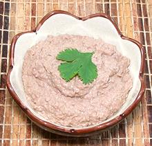

|
Liver PastePhilippine | ||||
| Makes: Effort: Sched: DoAhead: |
1-7/8 cup ** 1-1/4 hrs Yes |
This paste is used in a number of Philippine stews and sauces. With a little salt and pepper added it could also serve as a sandwich spread or dip for fried appetizers. | |||
|
1 6 1-1/2 8 ar |
# c T oz |
Liver (1) Water Salt Onion Water (more) |
Make - (1-1/4 hrs - 10 min work)
|